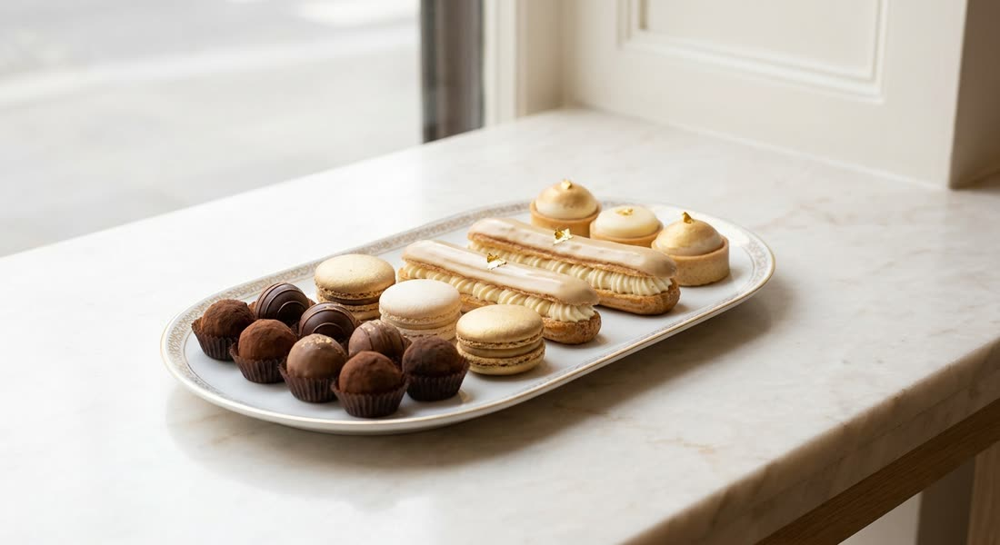

A grande ideia
O posicionamento que sustenta toda a comunicação.
As três marcas de referência (Dobla, Barry Callebaut e TopCau) são gigantes que falam com a indústria e com o chef de alto padrão. Elas vendem chocolate: acabamento, escala e tradição.
O MPS tem uma vantagem que nenhuma delas consegue ter: proximidade. Em vez de disputar o mesmo tom institucional, o MPS ganha pela relação direta com a confeiteira, falando a língua de quem produz no dia a dia.
A casca de trufa é o meio. O que a cliente compra é tempo, margem e tranquilidade para vender mais sem se sobrecarregar na produção. Esse é um território que as marcas grandes não ocupam, porque estão distantes da rotina dela.
Frase que guia a comunicação:
"Você recheia, fecha e vende. A casca pronta é com a gente."
Personas
Construídas com a leitura direta dos perfis de clientes (todos de Curitiba e região, de confeitaria fina e encomenda) e a pesquisa de mercado. Representam comportamentos, não pessoas específicas.
Carol, 38

Ficha rápida
Ela não tem falta de pedido. Tem falta de tempo. Cada hora moldando casca é uma hora que ela não usa vendendo, criando ou descansando.
A rotina
Trabalha por picos. Uma semana mais calma e, na sequência, uma enxurrada de pedidos junto de uma data. Na véspera, o recurso mais escasso é tempo e mão de obra.
O que ela valoriza
1) Acabamento impecável (filtro número um). 2) Ganhar tempo e escala no pico. 3) Fornecimento que não falha. 4) Preço e margem. 5) Atendimento humano e rápido.
A tensão (a dor)
Moldar casca é demorado, técnico e sujeito a erro (temperagem, brilho, quebra). É exatamente o que a casca pronta resolve.
O que ela quer
Entregar mais pedidos, mantendo o padrão, sem virar a noite.
Como falar com a Carol
Faça
Evite
Renata, 42

Ficha rápida
Ela tem orgulho do que faz à mão. Não quer um atalho que baixe o padrão. Quer conveniência nos momentos em que o volume não deixa fazer tudo do zero.
A rotina
Opera loja e encomenda ao mesmo tempo. Nos picos sazonais, o volume estoura e a produção artesanal não dá conta sozinha.
O que ela valoriza
1) Qualidade e acabamento acima de tudo (a marca é o nome dela). 2) Conveniência no pico, sem abrir mão do padrão. 3) Estética e apresentação. 4) Constância de fornecimento.
A tensão (a dor)
No auge da temporada, o volume não cabe na produção artesanal. Ela precisa de ajuda pontual sem parecer que terceirizou a qualidade.
O que ela quer
Manter o padrão premium mesmo dobrando o volume nas datas.
Como falar com a Renata
Faça
Evite
Mapa de dores
O MPS listou cinco dores. A pesquisa mostrou quais são mais fortes e revelou uma sexta, talvez a mais poderosa.
| Dor | Força | Como usar |
|---|---|---|
| Ganho de tempo casca pronta, só rechear | Muito alta | Argumento principal. "Chega de moldar casca por casca." Não estava na lista e é a mais forte. |
| Resistente ao calor | Muito alta | Alívio de uma preocupação real: o medo de entregar derretido. Teste no calor funciona muito bem. |
| Mais acessível | Muito alta | Foco em margem: "cabe no seu custo e você lucra mais". O momento é favorável. |
| Produto nacional | Alta | É o porquê que sustenta o resto: nacional significa mais acessível e fornecimento mais estável. |
| Pronta entrega | Alta | Dor sazonal. Ative com força antes dos picos (Páscoa, Mães, Namorados, Natal). |
| Variedade de sabores | Média | Fraca como dor, forte como gancho de tendência (pistache, matcha, edição limitada). |
Linha editorial: os 5 pilares
Todo post cai em um destes cinco pilares. Cada um já traz o tipo de imagem que combina.
🍫 1 · Mão na massa (o maior)
A casca ganhando vida: recheios, finalização, variações. Ensinar a aplicação já é vender o produto.
Imagem: a casca sendo recheada, a trufa pronta, um close do brilho.
✅ 2 · Prova e confiança
Depoimento, repost de cliente, antes e depois no calor, consistência.
Imagem: print de elogio, foto da trufa da cliente, teste no calor.
📅 3 · Calendário e datas
Páscoa, Mães, Namorados, junina, Natal, casamento. Antecipa o pico.
Imagem: a trufa no clima da data, contagem regressiva, mesa de festa.
👋 4 · Bastidor e rosto
Quem é o MPS, a fábrica, o feito aqui, a pessoa que atende.
Imagem: produção, a fábrica, a equipe, o processo.
💰 5 · Ganha-dinheiro e gestão
Rendimento, margem, precificação, "quanto você lucra com a caixa".
Imagem: a caixa, um cálculo simples e visual, comparativo.
Como fica um post na prática
Montar o post é onde mora a maior dificuldade. Aqui está a estrutura e três exemplos prontos de imagem mais legenda. Dá para reproduzir esse padrão sozinho ou pedir ao Claude que monte seguindo o modelo.
 Reels · Mão na massa
Reels · Mão na massaEnquanto umas moldam casca por casca, você já está vendendo.
A casca já vem pronta, lisa e brilhante. Você faz o recheio da sua receita, fecha e entrega. Menos tempo na bancada, mais pedidos no mês.
Chama no WhatsApp e peça a tabela.
#confeitaria #trufas #chocolatenacional #docesparafesta
 Carrossel · Mão na massa
Carrossel · Mão na massa5 recheios para vender mais com a mesma casca.
1. Ganache 2. Brigadeiro gourmet 3. Doce de leite 4. Ninho 5. Maracujá A base é a nossa. O sabor e a assinatura são seus.
Salva esse post e me conta qual você vai testar.
#confeitaria #confeiteira #trufaoca #docinhosdefesta
Foto · Calendário e festaUma mesa dessas não precisa custar a sua madrugada.
Com a casca pronta, você monta o volume de uma festa inteira em muito menos tempo. O acabamento fica uniforme, do primeiro ao último docinho.
Vai ter festa grande no mês? Chama no WhatsApp e monte seu pedido.
#docesparafesta #casamento #confeitariacuritiba #mesadedoces
Repare no padrão dos três: a linha em itálico é o gancho, o bloco do meio é o corpo curto, e a linha em destaque é o CTA único. É esse molde que se repete em todo post.
Bio do Instagram
A bio precisa responder em poucos segundos: o que é, para quem e o que fazer agora.
Campo "Nome" (conta na busca): MPS Alimentos • Cascas de Trufa
Destaques fixados: Recheios · Aguenta o calor · Como comprar · Clientes · A fábrica
Link: de preferência um WhatsApp direto. O WhatsApp é o balcão de venda.
Manual de postagem
Linguagem
- Fale de igual para igual com a confeiteira. Você entende a rotina dela.
- Simples e direto. Evite termos técnicos e corporativos.
- Fale do resultado dela (tempo, margem, tranquilidade), não da sua especificação.
- Tom acolhedor e profissional, nunca agressivo.
- Palavras que combinam: pronta, rende, aguenta, acabamento, brilho, no aperto, cabe na margem, feito aqui.
Espaçamento (o que faz ler no celular)
- A primeira linha decide tudo. É o gancho, não gaste com "oi, gente".
- Uma ideia por linha, com linha em branco entre os blocos.
- Emoji com moderação, como marcador no início da linha.
- Legenda curta vende no dia a dia. Carrossel educativo pode ser mais longo.
- Um único CTA por post.
Biblioteca de CTAs (um por post)
| Objetivo | CTA |
|---|---|
| Gerar pedido | "Chama no WhatsApp e peça a tabela." |
| Gerar contato | "Comenta EU QUERO que eu te chamo no WhatsApp." |
| Salvar (alcance) | "Salva esse post para usar na próxima encomenda." |
| Comentar (alcance) | "Qual recheio você faria? Conta aqui." |
| Compartilhar | "Marca aquela confeiteira que vive sem tempo." |
| Seguir | "Segue para não perder as ideias de recheio da semana." |
| Pedido por data | "Garanta sua casca antes do aperto da Páscoa. Chama no WhatsApp." |
Formatos (dá para fazer no celular)
- Reels 15-30s: o que mais gera alcance. Casca, recheio, fecha, vende. Bastidor. Antes e depois no calor.
- Carrossel 3-6 fotos: "5 recheios", passo a passo, comparativo. Gera salvamento.
- Foto única bem tirada: produto em destaque, luz de janela, fundo limpo.
- Stories: o motor diário. Enquete, "chegou lote novo", dúvida respondida, bastidor.
- Não precisa de estúdio. Luz natural e fundo limpo resolvem. Capricho vale mais que equipamento.
Hashtags
De 5 a 12, misturando nicho, local e produto: #confeitaria #confeiteira #trufas #docesparafesta #chocolatenacional #trufaoca #confeitariacuritiba #docescuritiba #pascoa
Banco de ideias de post
12 ideias com formato, pilar, imagem sugerida e CTA. Todas dá para produzir no celular.
| Ideia | Formato · Pilar | Imagem | CTA |
|---|---|---|---|
| 1 · Só rechear e vender | Reels · 1 | Casca sendo recheada | Peça a tabela |
| 2 · Teste do calor | Reels/foto · 2 | Trufa firme no calor | Salvar |
| 3 · 5 recheios | Carrossel · 1 | Trufas com recheios | Salvar |
| 4 · Quanto você lucra | Carrossel · 5 | A caixa e um cálculo | Salvar |
| 5 · Feito com MPS | Repost · 2 | Trufa da cliente + elogio | Marcar a gente |
| 6 · Conheça quem faz | Reels · 4 | Fábrica e produção | Seguir |
| 7 · Contagem regressiva | Foto/Reels · 3 | Trufa no clima da data | Pedir com antecedência |
| 8 · Trend do momento | Reels · 1 | O sabor da vez | Salvar |
| 9 · Mito e verdade | Carrossel · 2 | Casca + texto | Comentar |
| 10 · Moldar x pronta | Reels · 1 | Os dois processos | Comentar |
| 11 · Nacional na margem | Foto · 5 | A caixa e o produto | Peça a tabela |
| 12 · Kit de festa | Foto · 3 | Mesa de doces | Montar pedido |